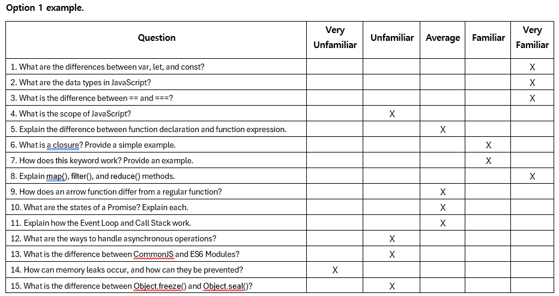
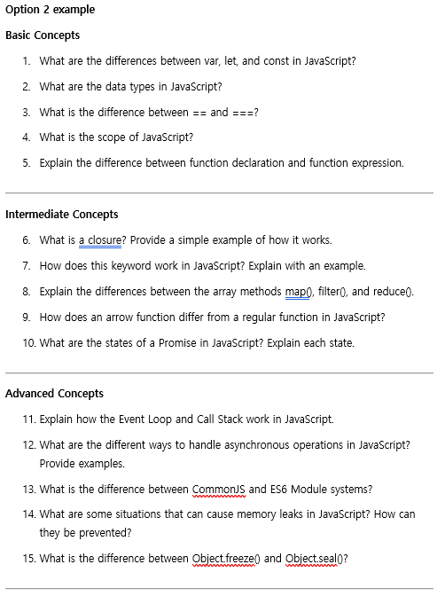

Created by Eunie, last modified on Jan 13, 2025
Comparison of Scenario Versions
: We have created two versions of a sample scenario. This table compares the different versions of the scenario, highlighting the key differences for each version.
[Key Differences]
The main difference lies in Step 3, as outlined below
This scenario begins with the user asking a question about wanting to learn JavaScript.
Stage | Version1 | Version2 |
|---|
Present Scenario Summary
| Explanation of Purpose and Scenario with greetings "How are you today? We’ll be discussing JavaScript today." or "Welcome to your personalized JavaScript assistant! Whether you’re just starting out or already a JavaScript pro, I’m here to help. Through a series of questions, I’ll assess your JavaScript skills, identify your strengths and areas for improvement, and provide tailored learning strategies and curriculum recommendations. Let’s dive into JavaScript together and achieve your coding goals!" "Would you like to learn more about JavaScript?" Submit from user | Introduces the scenario context and objectives.
You are a junior developer working on a web application that handles API requests for user data. The current implementation uses nested callbacks, leading to complex and hard-to-maintain code. Your task is to refactor this code using Promises to improve readability and error handling. Explain what a Promise is in JavaScript and how it offers advantages over traditional callback-based approaches. Create a simple function named waitForHello that returns a Promise, which resolves after 2 seconds with the string "Hello, world!" |
DTA Pre-Reflection
| Pre-Coaching Scenario for Learning Support If the user’s answer to the final question, "Would you like to learn more about JavaScript?", is Yes, continue to the next phase. If the answer is No, end the session. Begin by asking the user broad and general questions "Do you think you have a good understanding of JavaScript?" "If your knowledge were measured on a scale from 0 to 100%, where would you place yourself?" Etc.…
Record all responses provided by the user. AI generates scenario questions to present to the user in the 3rd step based on the user's response in the 1st step. At this time, AI generates questions that can assess the user's proficiency in JavaScript.
| Students assess readiness with pre-coaching questions Readiness Assessment Questions:
“On a scale from 1 to 10, how confident are you in your ability to solve the question about implementing and handling Promises in JavaScript?” “What skills do you think are needed for this scenario?” Are you familiar with the skills that are required by this scenario?
Challenge Identification Questions:
Proactive Engagement Questions:
|
Interactive Scenarios
| Questions to Assess the User's Learning Level Real-time generated questions based on the user's responses Ask the user questions designed to assess their level of knowledge. Two options are proposed (Survey Style vs. Direct Writing Style):
 | Real-world task simulation with basic engagement What is a Promise in JavaScript? How does using Promises enhance code readability and error handling compared to traditional callback-based approaches? Write a JavaScript function named waitForHello that returns a Promise. This Promise should resolve after a delay of 2 seconds with the string "Hello, world!". Show how you would call this function and handle the resolved value using .then() Demonstrate how to handle potential errors using .catch() Convert the waitForHello function invocation to use async/await syntax. Explain how this syntax simplifies handling asynchronous operations.
|
DTA Post-Reflection
| User Response Analysis for Encouragement Based on the user's responses, the AI evaluates their level of JavaScript knowledge. Through analysis, the AI identifies the user's strengths, weaknesses, and areas for improvement.
Providing Adaptive Feedback Based on the User's Learning Level Using the analysis, the AI generates 2-3 personalized learning curriculums tailored to the user's needs. The AI then seeks the user's confirmation on the suggested curriculums or regenerates them if needed.
| Encouraging Self-Assessment: Did completing this task improve your understanding of JavaScript Promises? How clear were the instructions provided for the task? What did you find most challenging about this task and why? Do you feel more prepared to handle asynchronous operations in JavaScript after this task? Any additional comments or suggestions for how we can improve this learning activity?
|
AI Summary
| AI Summary The AI summarizes whether the user's answers to the questions are correct or incorrect. It highlights the areas the user is proficient in and those that need improvement, providing guidance on study direction. If the user confirms, the AI documents all the details and provides them to the user.
| Summarizes performance and offers the option to submit the evaluation Performance Summary:
Rubric Alignment:
Gather all questions and answers into a document and submit it to the instructor. The process of organizing and submitting aligns with ensuring that the response adheres to the rubric’s structure or criteria.
|
{kind=link}
{kind=link}